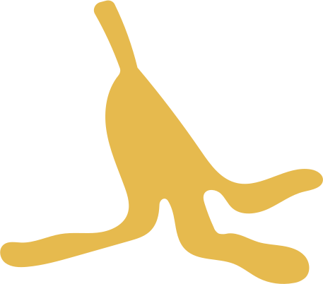

Сервис осознанного потребления
RE*TRASH


RE*TRASH — это медиа сервис об осознанном потреблении, основной задачей которого является максимально четко и доступно объяснить пользователям, как рационально подходить к использованию привычных для них предметов.

Наш проект, в основном направлен на пользователей, которые практически не разбираются в теме осознанного потребления. Однако, он будет полезен и тем, кто многое знает, но хочет уточнить какой-то конкретный вопрос.

Россия не самая приспособленная страна для осознанного потребления, поэтому у нас практически отсутствует такая кульура. Зачастую наши познания сводятся к сортировке мусора, а это далеко не единственная отрасль осознанного потребления. Также, во многих городах отсутствует видимая для человека вне контекста возможность его придерживаться.Поэтому, люди либо просто не слышали об осознанном потреблении, либо не хотят
в нем разбираться, потому что это сликшом сложно, либо не верят, что их даже самый маленький вклад очень важен.

Отсутствие знаний в этом вопросе (57%)
Неудобство (49,5%)
Безразличие (60,4%)
неразвитость инфраструктуры сбора и переработки
некоторые экоактивисты и экоорганизации так агрессивно навязывают своё дело, что не хочется
с ними связываться; из-за них у многих возникает ассоциация: «все, кого волнует эко повестка, фанатики»
Недобросовестные организации

Нужно осветить проблему сбора мусора в целом и, в частности, раздельного сбора мусора за пределами мегаполисов. Поскольку у людей в населенных пунктах долгое время вообще не было контейнеров для мусора, они привыкли либо закапывать/сжигать свои отходы, либо выбрасывать их в местах отдыха, не задумываясь
о вреде окружающей среде. Также необходимо устраивать субботники для уборки парков, русел рек, заповедников.
В сортировке мусора в первую очередь важно донести до большинства людей, почему это важно и почему это нужно именно ИМ. Иначе все эти проблемы продолжат интересовать только маленькое количество людей

Безразличие других
Неорганизованность
Неудобство в сборе и хранении.
Недоступность раздельного сбора разных фракций пластика.
В моем городе всего один пункт для сдачи раздельного сбора мусора
и он очень далеко от моего дома, а контейнеры стоят просто
для вида, по итогу все скидывают в одну кучу
Я не понимаю, как правильно их сортировать. Более того, не очень хочется вешать 3-4 разных урны у себя дома. Также я понимаю, что мои действия - капля в море, они ничего не изменят
Это очень неудобно делать самому, так как нет условий для сортировки (разные баки на помойках, например, пунктов сбора раздельного мусора крайне мало)
Долго думать куда кидать
Отсутствие привычки, воспитание с детства, привычка видеть только 1 мусорное ведро. Возможно надо в магазинах продавать мусорные мешки или ведра с отсеками, чтобы люди могли разделять.
Отговорки других людей - неудобно, непонятно им, все равно в одну кучу
Сложно понять, к какому типу отходов относится тот или иной вид мусора
Исследование показало, что большинство конкурентов, либо имеют узкую направленность, либо доносят информацию слишком сложно.
